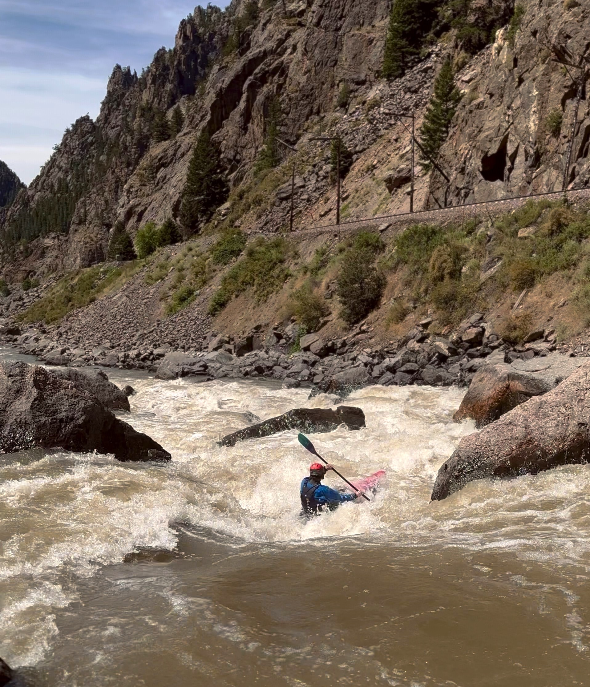

Kayaking
In addition to mathematics one of my greatest interests is whitewater kayaking. This page is dedicated to some of my favorite rivers and some pictures of me boating
Whitewater Kayaking
- Gore Canyon, Colorado. Pictured: Gore Rapid
- Bailey Canyon, Colorado. Pictured: Super Max Rapid
- Cache La Poudre, Colorado. Pictured: Lower Narrows
- Arkansas River, Colorado
- Cheoah River, North Carolina
- Ocoee River, Tennesse
- Little River, Tennesse
- Waterton River, Colorado. Pictured in the Waterton down and up race
- Merced River, California
